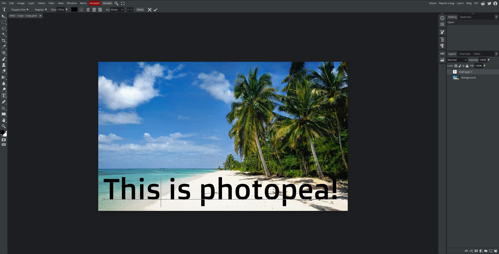
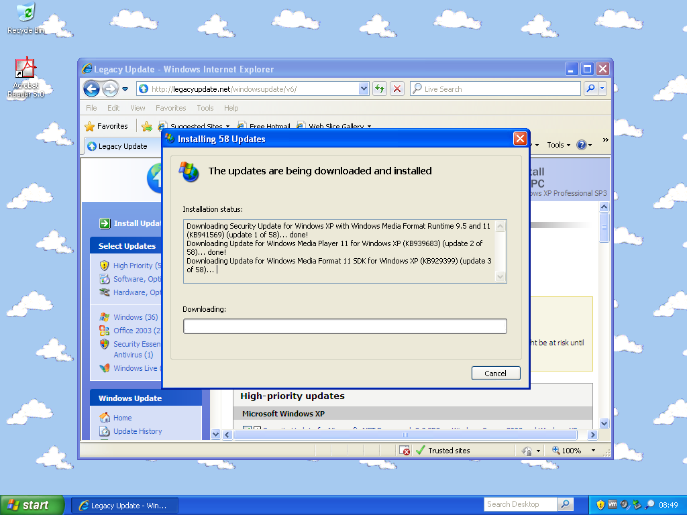
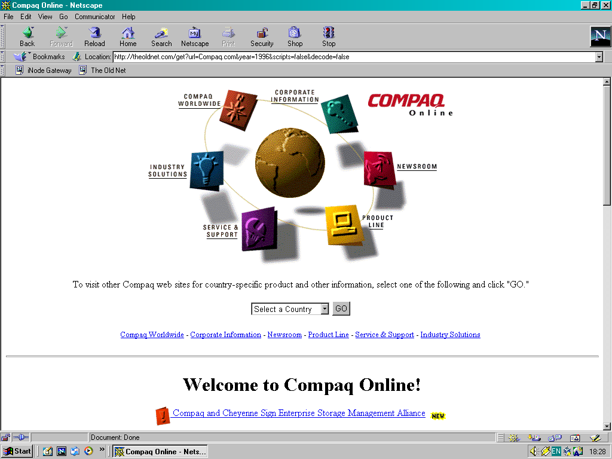
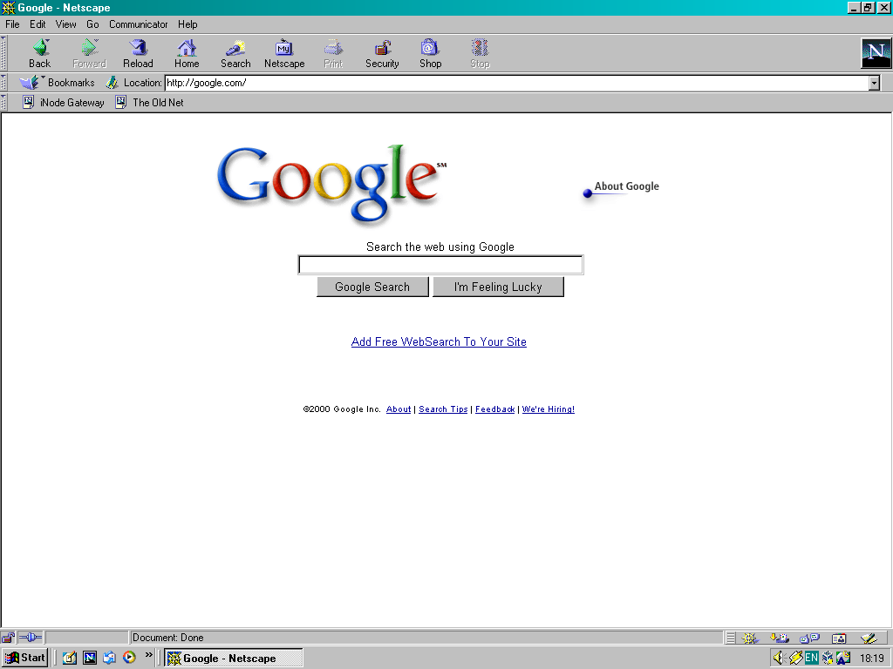
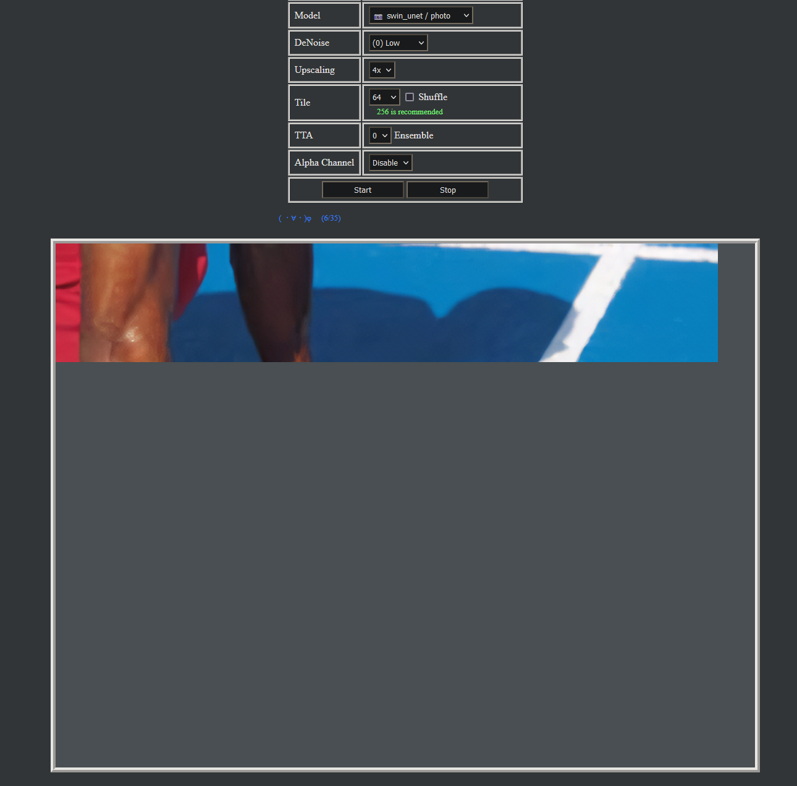

Art
Photopea - a online photo editor similar to photoshop.
Retro
Legacy update, gets windows update to work again. Works with windows 2000 - 8.1, but i have noted issues with windows 8. Also updates Microsoft Office.
The Old Web - utilizes Internet Archive's Wayback Machine to load old websites
 Protoweb - A proxy that allows for older computers to load old websites, some functionality restored such as weather or radio. also offers passthroughs to theoldnet and other resources.

Misc
Waifu2x Unlimited - A experimental browser powered version of Waifu2x can use unet and cunet models. Powerful PC's Recommended.